👁️ DrishtiGuide - Smart Assistive System for the Visually Impaired


Integrated IoT assistive ecosystem for real-time obstacle evasion & safety monitoring. Combines HC-SR04, MPU6050, NEO-6M & ESP-NOW with ESP32/ESP8266/RPi4 orchestrator. Designed as a synchronized smart-cane & haptic wearable module.
🌟 Tech Stack
Hardware Ecosystem
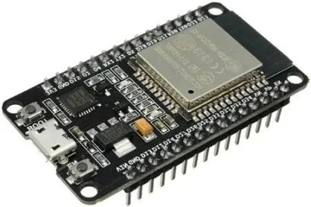
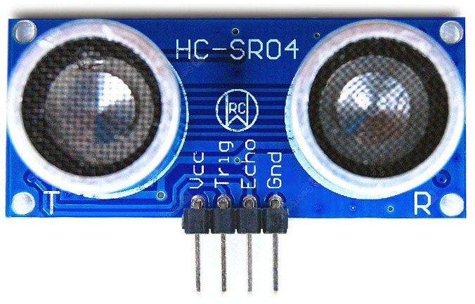
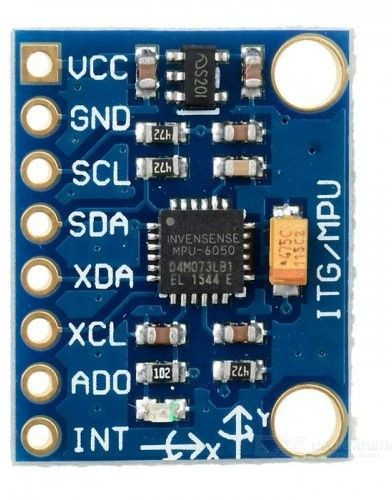
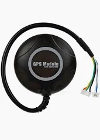
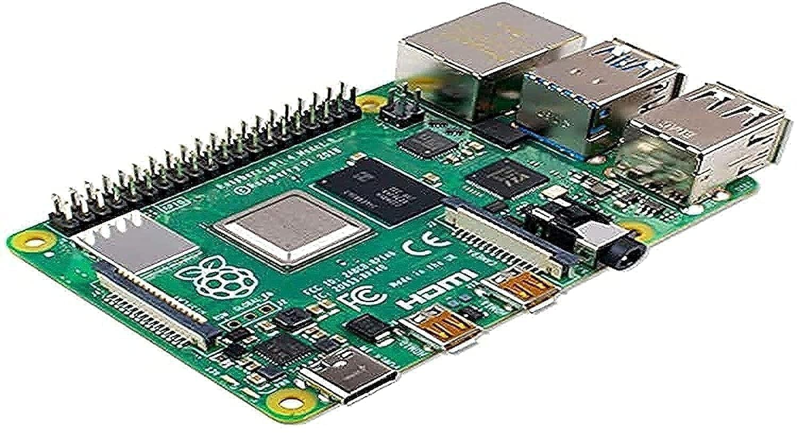
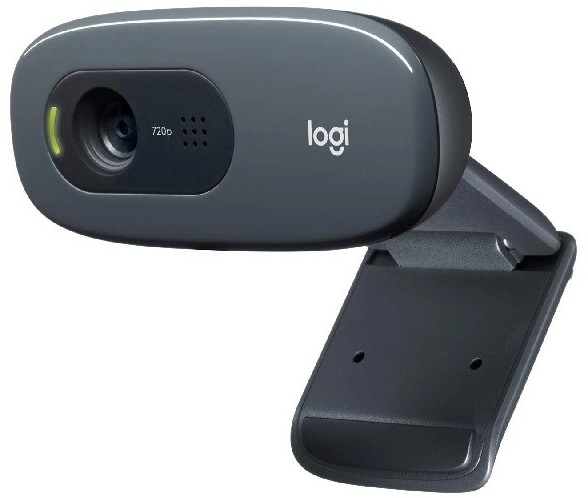
Software & Frameworks
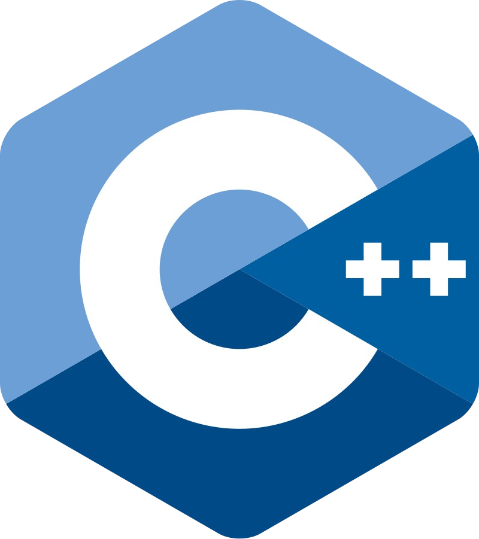
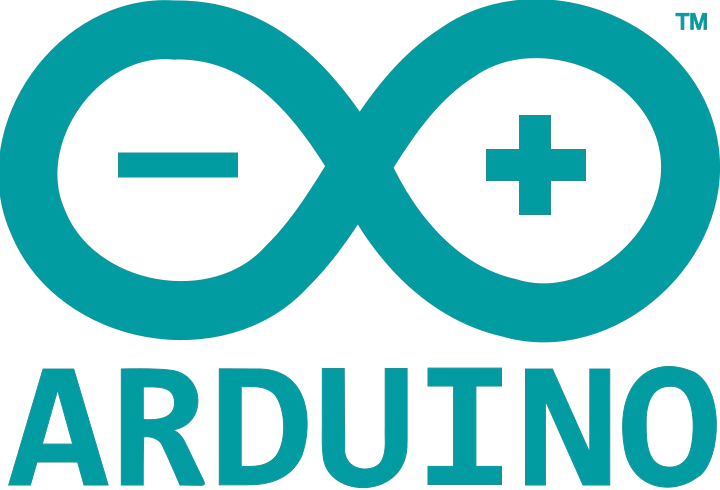
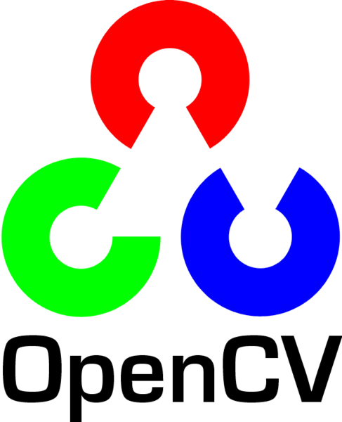
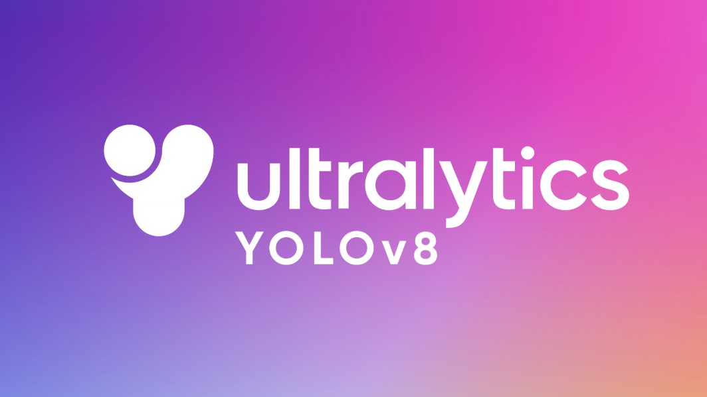
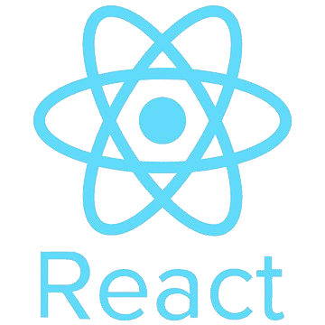
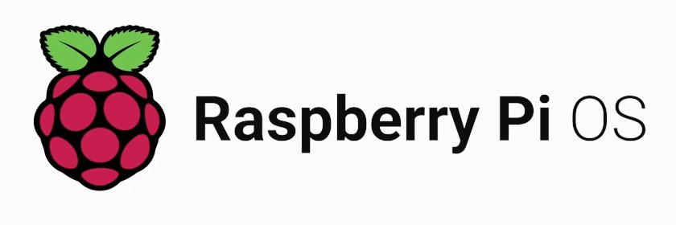
🎯 Features
🌟 Core Capabilities
- Real-time Obstacle Detection: Ultrasonic sensors detect obstacles up to 4 meters
- Intelligent Haptic Feedback: 5-level vibration motor system for intuitive distance indication
- Fall Detection System: Advanced algorithm using MPU6050 accelerometer/gyroscope
- GPS Location Tracking: Real-time positioning with web-based monitoring
- Emergency Alerts: Buzzer notifications for fall detection and inactivity
- AI Scene Perception: YOLOv8-driven object detection using a logitech webcam feed via RPi4.
🔧 Technical Highlights
- Wireless Communication: Low-latency ESP-NOW protocol for sensor-to-actor communication
- Multi-node Architecture: Distributed ESP8266 nodes for scalable design
- Edge Computing: Real-time sensor processing and decision making
- Web Interface: RESTful API for remote monitoring and configuration
- Power Optimization: Efficient sleep modes and battery management
🏗️ System Architecture
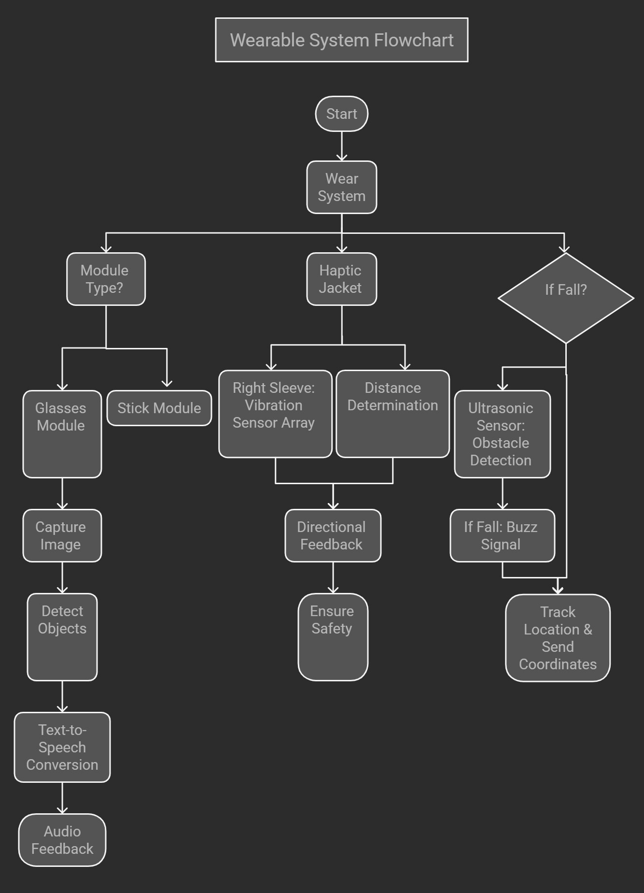
(Note on the Architecture Map: While the visual diagram outlines the core ESP routing, the total ecosystem operates via a synchronized multi-tier node structure:) * ESP8266 Smart-Cane Node (Transmitter): Scans the environment using HC-SR04 ultrasonic sensors to gather obstacle proximity data. * ESP8266 Wearable Hub (Receiver): Located in the jacket/wristband, providing 3D spatial haptic feedback via an array of vibration motors. * ESP32 Edge Orchestrator (Main Controller): Hosts the local web server dashboard, performs heavy fall detection (MPU6050) & geo-location tagging (GPS NEO-6M), acting as the central nexus triggering buzzer alerts. * Raspberry Pi 4 Vision Gateway: Anchors the advanced visual pipeline, running OpenCV and Ultralytics YOLOv8 inference models on the Logitech webcam feed to provide powerful real-time object detection and augmented scene reality.
Logic & Flow
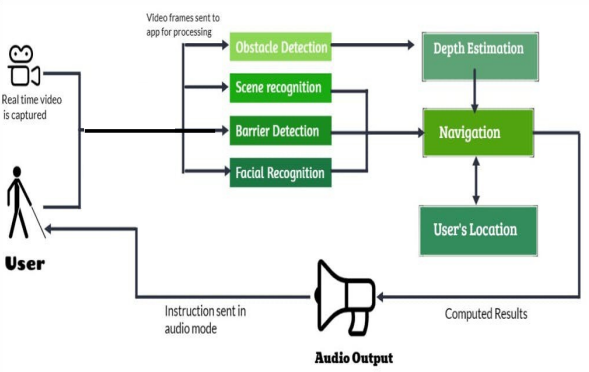
📁 Project Structure
drishtiguide/
├── 📁 assets/ # Media assets, testing results, diagrams
├── 📁 src/ # Source code
│ ├── 📁 esp8266-nodes/ # ESP8266 sensor nodes
│ ├── 📁 esp32-main-controller/ # Main ESP32 controller
│ └── 📁 web-interface/ # Web UI for monitoring
├── 📁 hardware/ # Hardware designs & specs
├── 📁 docs/ # Documentation
├── 📁 tests/ # Test suites
├── 📁 tools/ # Development utilities
└── 📁 deployment/ # Production setup
🚀 Quick Start
Prerequisites
- Arduino IDE 1.8.19+ or PlatformIO
- ESP8266 (2x) and ESP32 development boards
- Raspberry Pi 4 (for YOLO AI vision)
- Required sensors and components (see Hardware Specifications)
Installation
- Clone the repository
git clone https://github.com/harshitworkmain/drishtiguide.git
cd drishtiguide
- Install Arduino dependencies
- ESP8266 Board Manager (2.7.4+)
- ESP32 Board Manager (1.0.6+)
-
Required libraries (see requirements.txt)
-
Configure hardware
- Update MAC addresses in
src/esp8266-nodes/transmitter/config.h -
Set WiFi credentials in
src/esp32-main-controller/config.h -
Flash firmware
# Flash transmitter node
arduino-cli compile --fqbn esp8266:esp8266:nodemcuv2 src/esp8266-nodes/transmitter/
arduino-cli upload --fqbn esp8266:esp8266:nodemcuv2 --port /dev/ttyUSB0 src/esp8266-nodes/transmitter/
# Flash receiver node
arduino-cli compile --fqbn esp8266:esp8266:nodemcuv2 src/esp8266-nodes/receiver/
arduino-cli upload --fqbn esp8266:esp8266:nodemcuv2 --port /dev/ttyUSB1 src/esp8266-nodes/receiver/
# Flash main controller
arduino-cli compile --fqbn esp32:esp32:devkitv1 src/esp32-main-controller/
arduino-cli upload --fqbn esp32:esp32:devkitv1 --port /dev/ttyUSB2 src/esp32-main-controller/
- Monitor system
- Connect to "BlindStick_AP" WiFi hotspot
- Access monitoring interface at
http://192.168.4.1/gps
📊 Technical Specifications
Performance Metrics
| Metric | Value |
|---|---|
| Detection Range | 2cm - 400cm |
| Response Time | <100ms |
| Battery Life | 48+ hours |
| Wireless Range | 50m+ (ESP-NOW) |
| GPS Accuracy | ±3 meters |
Hardware Components
- MCUs: Raspberry Pi 4, ESP32 (DevKit V1), ESP8266 (NodeMCU) ×2
- Sensors: HC-SR04 Ultrasonic, MPU6050 IMU, NEO-6M GPS, Logitech 720p Webcam
- Actuators: 5× Vibration Motors, Buzzer
- Communication: ESP-NOW, WiFi 802.11 b/g/n
🔬 AI Vision Testing & Validation
Powered by Ultralytics YOLOv8 and OpenCV, the object perception system robustly identifies real-world objects in live time, providing critical spatial understanding to the user via edge-compute on the Raspberry Pi. Here are the AI field testing results:
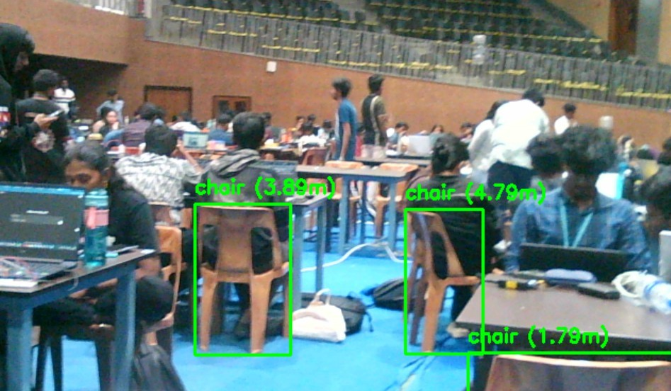
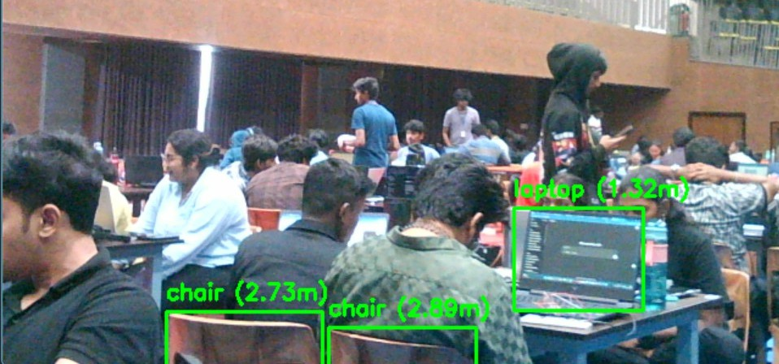
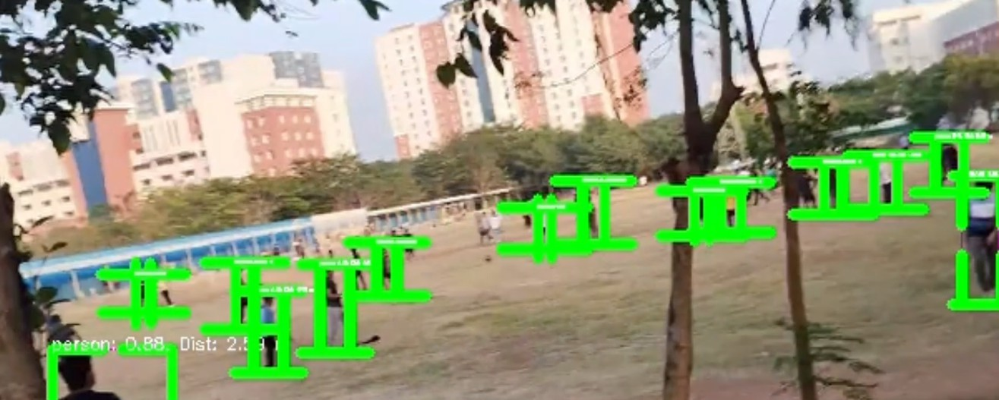
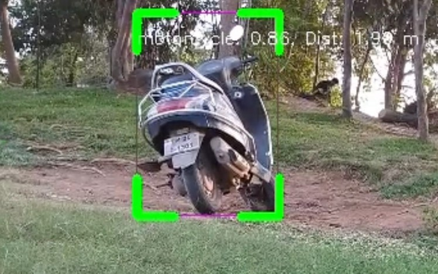
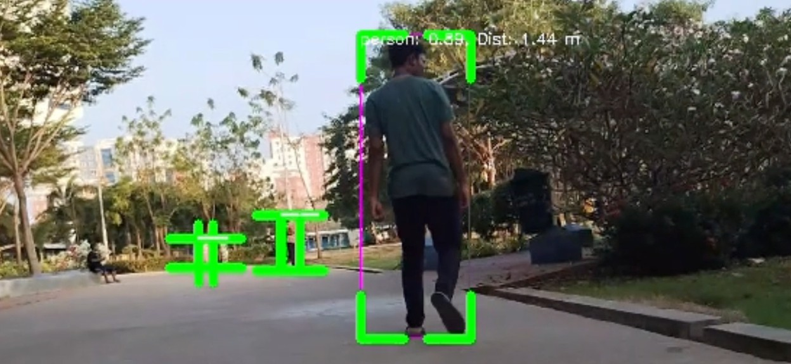
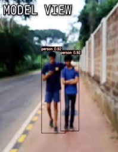
🧪 System Testing
Unit Tests
cd tests/unit_tests
python -m pytest test_sensor_algorithms.py -v
Integration Tests
cd tests/integration_tests
python -m pytest test_espnow_communication.py -v
📖 Documentation
🛠️ Development
Code Style
- Follow Arduino C++ conventions
- Use meaningful variable names
- Add comprehensive comments
- Modular function design
Contributing
- Fork the repository
- Create a feature branch (
git checkout -b feature/amazing-feature) - Commit your changes (
git commit -m 'Add amazing feature') - Push to the branch (
git push origin feature/amazing-feature) - Open a Pull Request
👥 About the Team
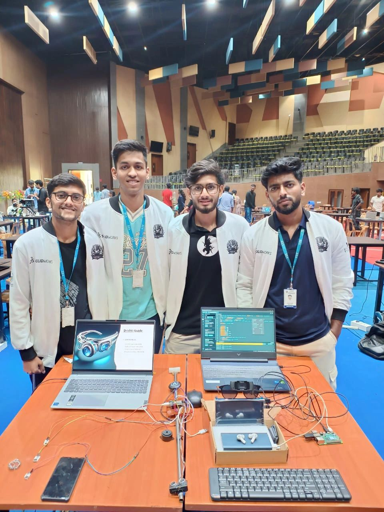
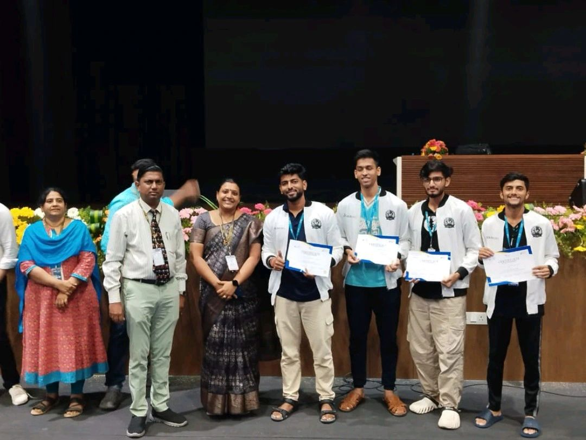
📜 License
This project is licensed under the MIT License - see the LICENSE file for details.
🤝 Acknowledgments
- ESP-NOW Protocol - Espressif Systems for reliable wireless communication
- TinyGPS++ Library - Mikal Hart for GPS processing
- MPU6050 Library - Electronic Cats for IMU integration
- Assistive Technology Community - For inspiration and feedback
👨💻 Author
Harshit Singh - Embedded Systems Developer - GitHub Profile
⚡ Built with passion for accessible technology and IoT innovation
📞 Support
For support, please open an issue on GitHub Issues or contact harshit.workmain@gmail.com.